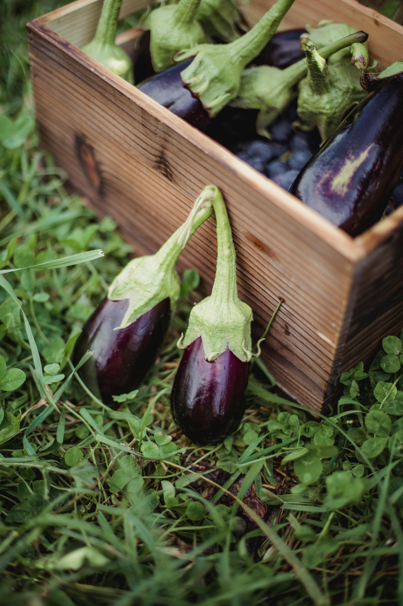

Potensi Utama Dusun Krajan



Potensi Pertanian Dusun Krajan
- Dusun Krajan di Desa Gondanglegi, Kabupaten Kebumen memiliki potensi pertanian yang cukup menjanjikan berkat kondisi tanah yang subur dan ketersediaan air yang mendukung kegiatan bercocok tanam. Warga setempat umumnya menggarap lahan sawah dan ladang untuk menanam padi, jagung, serta berbagai jenis sayuran seperti cabai dan kacang panjang. Selain itu, beberapa warga juga membudidayakan tanaman hortikultura dan tanaman pekarangan yang mendukung ketahanan pangan keluarga. Potensi ini dapat terus dikembangkan melalui penggunaan teknologi pertanian sederhana dan peningkatan akses pasar hasil panen.
Potensi Peternakan Dusun Krajan
- Dusun Krajan di Kabupaten Kebumen memiliki potensi peternakan yang cukup signifikan, terbukti dari data tahun 2019 yang mencatat populasi hewan ternak sekitar 90 ekor sapi potong, 400 ekor kambing, serta 1.700 ekor ayam lokal (ayam kampung/buras). Usaha ternak kambing lokal dipandang strategis karena permintaan pasar daging kambing relatif tinggi di desa maupun kota terdekat, tanpa membutuhkan modal besar dan dengan siklus reproduksi cepat. Peternakan ayam petelur dan kampung juga memberikan peluang nyata dalam pemenuhan kebutuhan telur dan daging lokal.